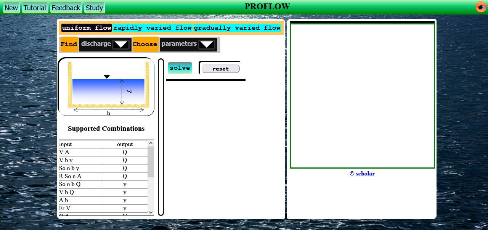

Create a new Project (chose a rectangular section).
If you don't know how to create a new project, refer to Introduction Chapter
If you have chosen the rectangular project, your window should appear as below.

The types of flow are well labeled, the button that is black represents the type of flow under consideration.
To switch to another flow, click the button that has its name.